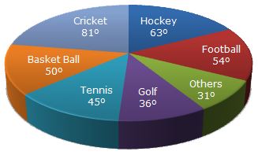

Stackup.com
Home
Aptitude
Logical Reasoning
General Knowledge
Ask Now
Data Interpretation
Home
>>
Aptitude
>> Test
Instructions
Total number of questions : 05.
Each question carry 1 mark, no negative marks.
DO NOT refresh the page.
All the best :-)
For questions 1-5
The circle-graph given here shows the spendings of a country on various sports during a particular year. Study the graph carefully and answer the questions given below it.

1. What percent of total spending is spent on Tennis?
A.12%
B.22%
C.25%
D.45%
2. How much percent more is spent on Hockey than that on Golf?
A.27%
B.35%
C.27.5%
D.75%
3.If the total amount spent on sports during the year be Rs. 1,80,00,000 , the amount spent on Basketball exceeds on Tennis by:
A. Rs. 2,50,000
B. Rs.3,60,000
C. Rs. 3,75,000
D. Rs. 4,10,000
4. How much percent less is spent on Football than that on Cricket?
A.22%
B.27%
C.33%
D.37%
5.If the total amount spent on sports during the year was Rs. 2 crores, the amount spent on Cricket and Hockey together was:
A. Rs. 8,00,000
B. Rs. 80,00,000
C. Rs. 1,20,00,000
D. Rs. 1,600,00,000
 Stackup.com
Data Interpretation
Stackup.com
Data Interpretation